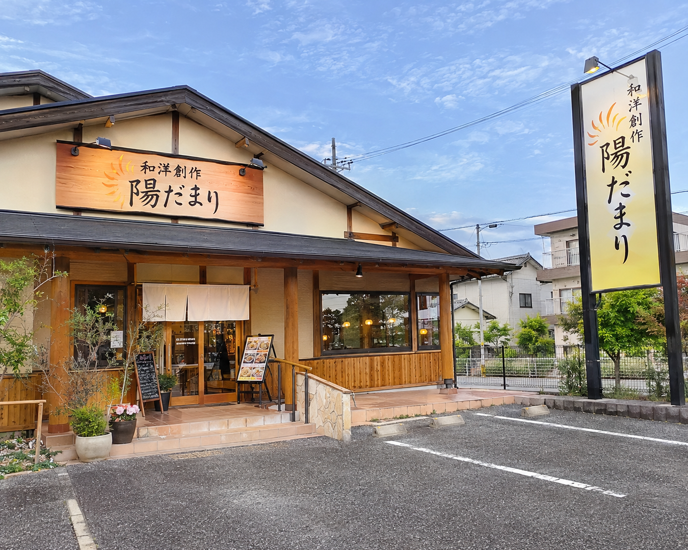

高校の授業は、学校の先生だけでつくるもの。そんな形が少しずつ変わっています。
文部科学省は現在、工業・商業・農業などの専門高校と企業との連携を進めています。企業による出前授業や施設見学、インターンシップなどを行いやすくするため、学校と企業をつなぐ仕組みも整えられています。
僕は、この方向には基本的に賛成です。
企業のことは、学校の先生だけでは分からない部分があります。実際に企業で働いている人が学校に入り、授業だけでなく、学校側との話し合いや企画の段階から関わることにも意味があると考えています。
一方で、企業が高校に入れば何でもいいわけではありません。
特に大切なのは、高校生を安価な労働力として扱わないこと。そして、高校生に任せると決めたなら、失敗するところまで含めて任せることです。
専門高校と企業をつなぐ動きが進んでいる
文部科学省によると、2025年5月時点で専門高校の生徒は約48万人で、高校生全体の16.9％を占めています。
専門高校とは、農業、工業、商業、水産、家庭、看護、情報、福祉など、職業教育を主とする学科を設置している高校です。
現在、文部科学省は「専門高校等における産業界との連携・協働のための専門人材バンク構築事業」を進めています。企業による出前授業、施設見学、インターンシップ、機材提供、資格取得支援などについて、専門高校と企業をつなぐ仕組みです。
企業が学校教育に関わること自体は以前からありましたが、個々の学校と企業のつながりだけに任せるのではなく、国として連携しやすい仕組みを整えようとしているところに今回の特徴があります。
姫路商業では、企業の本当の課題に取り組んでいる
僕の住む姫路市にも、面白い取り組みをしている高校があります。
兵庫県立姫路商業高校です。
姫路商業では、PBL、つまり課題解決型学習に取り組んでいます。学校の公式情報によると、約20社の企業・団体と連携し、
「商品やサービスの魅力をどう伝えるか」
「若い世代に興味を持ってもらうにはどうすればいいか」
「地域を活性化するにはどうすればいいか」
といった、実際の企業課題を高校生が考えています。
3年生全員が参加し、情報収集だけでなく、KPIの設定、資料作成、発表まで行います。
教科書の中で商業の知識を学ぶだけではなく、実際の企業が抱えている問題に向き合う。僕は、こういう学びは面白いと思います。
地元レストランと商品を開発して実際に販売
その中の一つが、姫路市飾東町豊国にある「和洋創作 陽だまり」との取り組みです。

姫路商業の生徒たちは、課題研究として店舗と協力し、季節に合わせたメニューを開発しています。前期には「韓国風冷麺」「キーマカレー」「豚しゃぶ」の3種類を考案し、実際に販売しました。
僕は、ここに大きな意味があると思っています。
授業の中で「こんな商品が売れると思います」とプレゼンして終わるのではなく、実際に商品にして、お客さんにお金を払って買ってもらう。
そこまでやると、自分たちが作りたいものと、お客さんが買いたいものは同じなのか、値段はいくらなら買ってもらえるのか、どう伝えれば興味を持ってもらえるのか、売れなければ何が悪かったのかまで考える必要があります。
これはまさに商業の勉強です。
お店側にもメリットがある
こうした取り組みは、高校生だけではなく、店側にもメリットがあると考えています。
「地元の高校生が一生懸命考えた商品です」と言われれば、「一度食べてみようか」と思う人もいるでしょうし、お店の人からしても、
「高校生が頑張って考えたんだから、ぜひ買ってください」
と営業しやすいと思います（笑）。
今回の取り組みで実際にどれだけ売上が増えたのかという数字は公表されていません。ただ、こうした企画は少なからず店の認知や来店のきっかけにはなると僕は考えています。
地域の高校と地元企業が一緒に商品をつくり、それを地域の人が買う。高校生の学びだけでなく、店のPRや地域活性化にもつながります。
うまく設計できれば、学校、企業、生徒、地域のそれぞれに価値をつくれる取り組みです。
普通科まで同じ形を広げる必要はない
僕は、この仕組みをすべての高校へ同じように広げる必要はないと考えています。
普通科と専門高校では、高校で学ぶ目的が違うからです。
文部科学省の2025年3月卒業者のデータでは、普通科では71.8％が大学・短大等へ進学し、就職者は6.1％です。一方、専門高校全体では、大学・短大等への進学が26.3％、専修学校・職業能力開発施設等が24.1％、就職が47.2％となっています。
商業高校や工業高校から大学へ進学する生徒もいますし、姫路商業高校も大学進学実績を出しています。それでも、普通科と比べれば、専門高校は職業や社会との接続を強く意識した教育を行っています。
だからこそ、今回のような企業との実践的な学びは、特に専門高校と相性がいいと考えています。
普通科まで一律に企業連携を増やす必要はありません。高校によって学ぶ目的が違うのであれば、教育の形も違っていいはずです。
高校生を「安価な労働力」にしてはいけない
企業連携で一番注意してほしいのは、高校生を安価な労働力として扱わないことです。
企業からすれば、高校生が商品を考え、SNSを運用し、イベントを手伝ってくれる。やり方によっては非常に都合のいい存在になってしまいます。
しかし、これは企業の人件費を減らすための取り組みではありません。高校生の教育のために行うものです。
そのため、企業が決める領域と、高校生に任せる領域を最初にはっきり分けておく必要があります。
そして、最終的な責任は企業側が持つ。
高校生のアイデアで商品をつくり、結果が出なかったとしても、
「高校生の企画が悪かった」
とはいうべきではありません。
高校生に任せると判断したのは大人です。結果に対する責任まで高校生に背負わせるべきではありません。
任せたら、余計な口出しをしない
同時に、企業が「高校生に考えてもらおう」と決めたのであれば、任せるところは任せ切ってほしいと思います。
高校生が案を出すたびに、企業の人が「それは売れない」「こっちの方がいい」と修正してしまえば、最後にできあがるのは大人が考えた商品です。
安全性、法律、予算など、企業側が判断しなければならない領域は当然あります。ただ、高校生に任せると決めた領域まで大人が正解へ誘導してしまえば、教育的な価値はかなり下がります。
僕は、失敗することも教育の一つだと考えています。
思ったほど売れなかった。SNSで発信しても反応がなかった。アンケートを取ったら自分たちの予想とまったく違った。
それでいいのです。
「なぜ売れなかったのか」「何を変えればよかったのか」と考えるところに学びがあります。
企業の仕事でも、すべての新商品が売れるわけでも、すべての企画が成功するわけでもありません。それなら、高校生にも成功だけを経験させる必要はないでしょう。
失敗して、原因を考えて、次に修正する。
そこまで経験して初めて、本当の意味で社会に近い学びになると思います。
教科書で学んだことを、社会で使ってみる
僕は、企業の人が専門高校の教育に入っていく流れには賛成です。
先生は教育の専門家ですが、企業経営、商品開発、営業、マーケティングなど、実際の現場にいるからこそ分かることがあります。学校の先生がすべてを教えようとする必要はありません。
企業に任せた方がいいところには、企業の人に入ってもらう。
その代わり、企業側は「高校生を使う」のではなく「高校生を育てる」という視点を持つ。学校側も企業へ丸投げせず、どこを企業が決め、どこから高校生に任せるのかを設計する。
そして高校生には、自分たちで考え、実行し、成功も失敗も経験させる。
姫路商業高校と「和洋創作 陽だまり」の取り組みを見ると、専門高校だからこそできる教育には、まだまだ可能性があると感じます。
教科書で学んだことを、実際の社会で使ってみる。
卒業後に社会へ出る可能性が高い専門高校の生徒にとって、この経験には大きな意味があると僕は考えています。